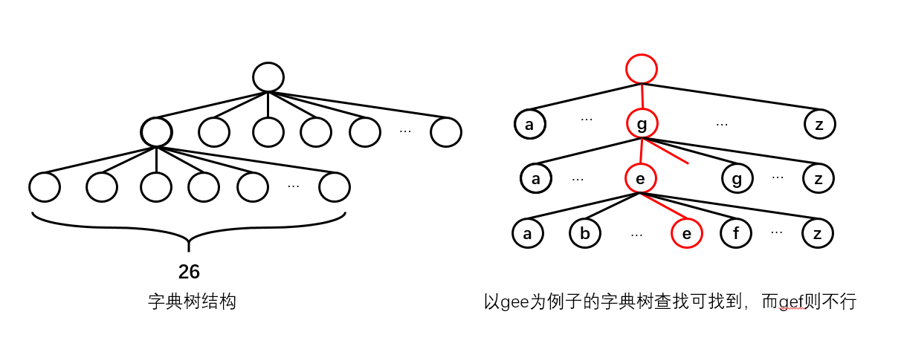

字典树介绍
本文最后更新于：3 分钟前
字典树
字典树是一种较为特殊的数据结构，今天和小伙伴讨论的时候得知。因此写下该笔记，并附上相关代码加深印象。
引例
给定一个字符串数组，里面包含了一堆字符串，让你统计每个字符串（单词）出现的次数。
解法1：暴力解法：
直接遍历统计所有的单词出现的次数。该解法为最容易想到，但是效率最低的一种。
解法2：借用java中的map实现，遍历字符串数组，将字符串以key值保存在map中，并以该单词的出现次数作为value值。如果想要某个单词的出现次数，直接用get(key)就可以了。
解法3：字典树，字典树以一个根节点开始，每个节点下可以有26个字节点，分别对应26个字母（如果字符全是小写或者大写字母）。那么如果要某个字符串，就将该字符串在字典树中递归下去，找到代表最后一个字母的叶子结点，如果找得到（不为空），则说明该字符串是存在的。解用该思想，我们只需要为每个结点添加一个计数值，输出字符串最后一个字母的计数值即可。字典树结构如下：

介绍
字典树一般在数据结构中不会指出，是一种知名度不高的数据结构，但是对于某些实现还是很有作用的。字典树又被称为基数树和前缀树，顾名思义，根据基数（前缀）来查找的树结构。节点在树中的位置定义了与该节点相关联的键，这与二叉搜索树不同，二叉搜索树中节点存储的键只对应于该节点。节点所有后代具有相同的前缀，根节点关联空字符串。
具体代码
以引例为例子：
通过字典树思想来思想该例子的代码如下：
class WordsFrequency {
//字典树结构，count复杂计算每个字母出现的次数，用数组保存子节点。
class Trie {
int count = 0;
Trie[] t = new Trie[26];
public Trie(){};
}
//创建根节点
Trie root = new Trie();
public WordsFrequency(String[] book) {
//遍历字符数组
for (String s:book)
{
//对于每次遍历都从字典树的根节点开始
Trie trie = root;
for (char ch: s.toCharArray()
) {
//数组索引对应字母，而数组内存的值代表该字母出现的次数
if(trie.t[ch-'a']==null){
//若没有，则创建新的节点
trie.t[ch-'a'] = new Trie();
}
//继续向树结构往下走
trie = trie.t[ch-'a'];
trie.count++;
}
}
}
public int get(String word) {
//拿到根结点
Trie cur =root;
//在字典树中遍历字符串，如果遍历过程断了（节点为null），则说明字典树不存在该字符串
for (char c:word.toCharArray()
) {
if(cur.t[c-'a']==null)return 0;
else{
cur = cur.t[c-'a'];
}
}
//返回最后一个字符串的计数，代表该字符串出现的次数。
return cur.count;
}
}
public class TestDemo {
public static void main(String[] args) {
//测试用例
WordsFrequency wordsFrequency = new WordsFrequency(new String[]{"wordsfrequency","get","get","get","get","get","hava","hava"});
System.out.println(wordsFrequency.get("hava"));
//返回2
}
}按照此代码，我们将根据字符串数组建立一个以数组模拟节点的字典树，该字典树的一个节点（数组中的一位）的索引代表了字符相对于‘a’的位置，也就是代表了哪个字母，而数组中的值代表了字符的出现次数。因此，通过字符串在字典树中遍历，输出最后一个字母的计数值，就是我们的需要的字符串出现次数。
本博客所有文章除特别声明外，均采用 CC BY-SA 4.0 协议 ，转载请注明出处！